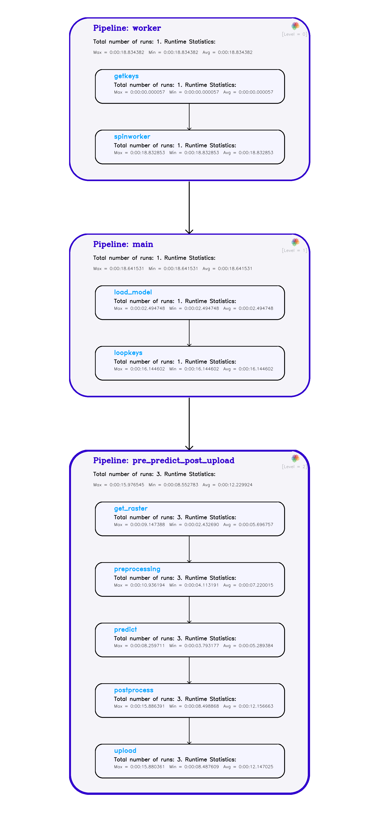

Deployment
Table of Contents
Getting a Summary of Pipeline Runs
Contributing to Function Library
Component Function Requirements
Introduction:
This framework provides a way to set up model deployment from reusable and modular components. The aim is to generalize how models are deployed at DL, although the tools within this might be useful for other tasks as well.
TIP: You can add the model to a Google bucket and provide the model path as
/festivus/<path_to_model_in_googlestorage>
Concepts:
Component:
This is the most basic unit of work, that wraps a python function, and controls which variables are fed to it and which ones are returned. Every python function that needs to be run should be wrapped in a Component. See Component Function Requirements
Pipeline:
An ordered collection of Components, that provides method to execute its components in either a serial or a multiprocessing fashion. A Component cannot be run on its own, and needs to go inside a pipeline.
Function Library:
A set of commonly useful functions that can be imported from this library to build Components. See Contributing to Function Library
I/O Handling:
Components, when put inside a pipeline, are not automatically connected. The user needs connect them by specifying, for each Component, where it is getting the input variables from, and what variables should be returned at the end of its execution.
Variable Namespace:
Since a user controls all the variable flow in a pipeline, it is crucial to understand the scope of each variable created.
- Static Component Variables: These are visible only to the Component they are set with. Intended use case is to pass all those input variables to a Component function that have a static value and are not needed in any other Component. Consider this to be the equivalent of wrapping the function with functools.partial
- Runtime Component Variables: These can be configured to receive values at runtime (i.e the point where the corresponding component function will be run), and can be shared with any other component. Intended use case is to pass I/O values between different components as the pipeline runs.
- Static Pipeline Variables: These are visible to every Component that exists in the pipeline. Intended use case is to set all those input variables to a Component function that have a pre-determinable and static value, and are needed in two or more Components. As an alternative, you could use Static Component Variables and set them in each Component definition, but it could get redundant and tedious.
NOTE: Components handle automatic deletion of
Runtime Component Variables(from the same pipeline) once no longer required. See Variable Deletion RoutinesNOTE:
Static Pipeline Variablescan be accessed even by components that are not part of that pipeline.
Initializing a Component:
This is the fist step to creating a Component. The user must provide a unique name for it, and a python function that it wraps. You can do it like
# If the function exists in the function library, pass it as a string
comp = Component(name='my_comp', func='func_in_library')
# If it is a function defined elsewhere, pass the handle
def my_func:
...
comp = Component(name='my_comp', func=my_func)
Initializing a Pipeline:
This is the fist step to creating a Pipeline. The user must provide a unique name for it. You can do it like
pipeline = Pipeline(name='my_pipeline')
Building a Component:
Once initialized, you should configure I/O variable routines among other optional things. The user provides where a component gets its input variables from, and what output variables of a component function are recorded (to be used by other components, later in the pipeline). You can optionally do things like saving and printing the variable values at the end of a component execution.
Setting Input Variables:
There are three ways of passing input values to a function of a component
- By setting Component level static_args for static values for that Component (the alternative being functools.partial)
- By setting Component level runtime_args for values that are made available at runtime (eg. the output of a previous component in the pipeline).
- By setting Pipeline level static_args for static values for one/more Components in that Pipeline (the alternative being functools.partial for each Component that needs it). If you set a variable this way, you should only try to access it via Component level runtime_args, and not Component level static_args
- (WARNING: This works only if a component is the first one in a pipeline) By passing a keyword argument for that value to the run or map method of a pipeline which this component is the first member of.
The following cases explain ways to do all the above.
Passing Static Component Variables:
Set static_args attribute of a Component. It accepts a dictionary, where each key is the name to set, and each value is the variable value to assign to the name.
comp = Component(name='...')
comp.static_args = dict(products=['usda:naip:rgbn:v1'], bands=['red', 'green', 'blue'])
# Every time the Component's function is run, these values are passed to it.
Passing Runtime Component Variables:
If a Component function should get some of its input values from a Runtime Component Variable or a Pipeline Variable (this could be either because the value is coming from a previous step in the pipeline at runtime, or because the value is coming from a preset Pipeline Variable), you should use the runtime_args attribute of a Component to let it know where it should get the inputs from. It accepts a dictionary (key, value), where each key is the name of the variable (in the component's function definition) that the value is passed to, and each value is variable that would be passed. Every key is of str type, and every value takes either <component_obj>.FutureVariable.<variable_name> or <pipeline_obj>.FutureVariable.<variable_name> depending on where it is coming from. Note that you cannot provide any other variable as a value. Also, variable names starting with single or double underscore are prohibited.
# Let's create two components that we intend to run serially
def my_func1(tilesize):
return locals()
comp1 = Component(name='comp1', func=my_func1)
def my_func2(tilesize):
tilesize += 2
return locals()
comp2 = Component(name='comp2', func=my_func2)
# Now, if comp1 is the first in a pipeline, we need to pass an initial value for `tilesize`
# One way to do this is to set it as a static arg
comp1.static_args = dict(tilesize=1024)
# Alternatively, I could use functools.partial and not set a static_arg:
my_func1 = partial(my_func1, tilesize=1024)
comp1 = Component(name='comp1', func=my_func1)
# As for comp2, it gets the tilesize from whatever comp1 returns as tilesize.
# To do this, specify the runtime_arg of comp2 to get its `tilesize` from the output value of `tilesize` of comp1
comp2.runtime_args = dict(tilesize=comp1.FutureVariable.tilesize)
# NOTE: we should also ask comp1 to record its output `tilesize` so that comp2 can access it.
# We look at it in the next section, "Setting Output Variables"
Passing Static Pipeline Variables:
Use the add_pipeline_variable method of a Pipeline to set any Static Pipeline Variable. It accepts a dictionary, where each key is the name to set, and each value is the variable value to assign to the name. Access them via specifying the value in a Component's runtime_args attribute.
pipeline = Pipeline(name='...')
pipeline.add_pipeline_variable(dict(unpadded_tilesize=1024, pad=0))
# Now I can use this in any component.
# For example, if I want to use this as the `tilesize` input argument for comp1 from the
# previous example, I could do:
comp1.runtime_args = dict(tilesize=pipeline.FutureVariable.unpadded_tilesize)
# And I will not need to do comp1.static_args = dict(tilesize=1024)
# NOTE: It is illegal to pass in a pipeline variable as to static_args of a component
comp1.static_args = dict(tilesize=pipeline.FutureVariable.unpadded_tilesize) # Illegal
See Variable Sharing Routines to understand what variable values might get overwritten
For understanding the lifetime of all these variables, see Variable Deletion Routines
Passing Pipeline-run Variables:
This is useful when a pipeline is wrapped inside another pipeline, and some arguments need to be passed during the execution of the outer pipeline to the inner pipeline. Use inner_pipeline.run(kwargs=<kwargs>). See Wrapping Pipeline inside another Pipeline for an example.
Passing Pipeline-map Variables:
Analogous to Passing Pipeline-run Variables, this method is useful when you are doing a map call on a pipeline instead of a run call (see Multiprocessing Across Pipeline). You could do inner_pipeline.map(kwargs=<kwargs>). See Multiprocessing Examples
Setting Output Variables:
A user can specify which variables from a function should the Component record at the end of its execution, so that it can be made available for use by other components in that/other pipeline(s). Use the to_record attribute of a Component to specify these variables. It accepts a dictionary (key, value), where key is the name of the variable in the component's function and value is the name by which you want this variable to be stored in the pipeline.
Names for value starting with single or double underscore are prohibited.
def my_func():
a1 = 5
a2 = 6
a1 += 7
return locals()
comp = Component(name='my_comp', func=my_func)
comp.to_record = dict(a1='my_a1', a2='a2')
# Whenever this comp is run as part of the pipeline, at the end of the execution of my_func,
# the values `a1` and `a2` are stored as `my_a1` and `a2` in that component `comp`.
# Any component that runs after this component can then access those values as
# comp.FutureVariable.my_a1, and comp.FutureVariable.a2
# It is important to note that the value of a variable that gets recorded is the one that exists
# just before the function returns. Intermediate values cannot be recorded/accessed.
# In this example, the value of a1=5 cannot be recorded.
It is illegal to ask a component to record a variable but never use it. The framework will throw an exception.
Variable Sharing Routines:
Components allow variable sharing by providing a routine like <component_obj>.FutureVariable.<variable_name>. When recording a variable and passing it as a runtime_arg for another component via this routine, care must be taken if the component functions are doing in-place operations.
Consider the following example
inp_image = np.zeros((4,4))
def my_func1(x):
print('I am func1. I received: ', x)
x += 5
return locals()
def my_func2(x):
print('I am func2. I received: ', x)
x += 10
return locals()
def my_func3(x):
print('I am func3. I received: ', x)
x += 2
return locals()
comp1 = Component('comp1', func=my_func1)
comp1.static_args = dict(x=inp_image)
comp1.to_record = dict(x='x')
comp2 = Component('comp2', func=my_func2)
comp2.runtime_args = dict(x=comp1.FutureVariable.x)
comp3 = Component('comp3', func=my_func3)
comp3.runtime_args = dict(x=comp1.FutureVariable.x)
pipeline = Pipeline('my_pipeline')
pipeline.compile_pipeline([comp1, comp2, comp3])
pipeline.run()
# Here, the output looks like this:
I am func1. I received: [[0. 0. 0. 0.]
[0. 0. 0. 0.]
[0. 0. 0. 0.]
[0. 0. 0. 0.]]
I am func2. I received: [[5. 5. 5. 5.]
[5. 5. 5. 5.]
[5. 5. 5. 5.]
[5. 5. 5. 5.]]
I am func3. I received: [[15. 15. 15. 15.]
[15. 15. 15. 15.]
[15. 15. 15. 15.]
[15. 15. 15. 15.]]
# Even though we were intending to pass the output of comp1 to comp3, the fact that comp2 did an
# in-place modification to `x` in my_func2 meant that when it was time for `comp1.FutureVariable.x`
# to get evaluated by comp3, it was already modified.
The framework allows you to access component variables from components belonging to a different pipeline, but there are certain implications leading to them remaining in memory throughout the life of the program. See Variable Deletion Routines
Variable Deletion Routines:
In consideration of being memory efficient, this framework runs a cleanup job after running every component, and deletes all (*) those variables that are no longer needed.
Consider the following example
comp1 = Component(...)
comp1.to_record = dict(c1_x='x')
comp2 = Component(...)
comp2.runtime_args = dict(c2_x=comp1.FutureVariable.x)
comp2.to_record = dict(x='x')
comp3 = Component(...)
comp3.runtime_args = dict(c3_x=comp2.FutureVariable.x)
pipeline = Pipeline(...)
pipeline.compile_pipeline([comp1, comp2, comp3])
comp1->comp2->comp3. After comp2 uses comp1.FutureVariable.x, it is no longer needed, because comp3 does not use it. As such, the framework goes ahead and deletes comp1.FutureVariable.x.
This deletion behavior is True for all such variables with the following restrictions:
- Variables coming from Pipeline Static Args are not deleted. The lifetime of such variables are as long as that Pipeline object is in scope.
- Variables coming from a component that runs in another pipeline are not deleted. This is because the source pipeline does not know if the destination pipeline is running in a loop or not. In the above example, if comp1 was part of a different pipeline, then comp1.FutureVariable.x would not have been deleted. This aspect is crucial to understand when running pipelines in a loop and multiprocessing them (see Multiprocessing Within Pipeline)
Building a Pipeline:
After you have built all the components, its time to put them in a pipeline and run them.
pipeline = Pipeline(name='my_pipeline')
# Let's say we want to add the two components comp1 and comp2 (for reference, defined under the section
# "Passing Runtime Component Variables", but not important)
# We add those components while compiling the pipeline
pipeline.compile_pipeline([comp1, comp2])
NOTE: Optionally, you can pass additional arguments for parallelizing and logging when compiling a pipeline. See Multiprocessing Within Pipeline and Logging
Running a Pipeline:
After you have compiled a pipeline, you can run it. You could either run it serially, or could multiprocess it.
# To run it serially
pipeline.run(kwargs=<kwargs_to_pass>)
# where kwargs_to_pass is useful if you want to pass initial inputs to the *first* component in that pipeline.
# If you want to multiprocess within pipelines
pipeline.run(kwargs=<kwargs_to_pass>)
# Additionally, you would have set the pipeline to parallelize on compilation
# If you want to multiprocess across pipelines (this is different from multiprocessing within a pipeline)
pipeline.map(kwargs=<kwargs_to_pass>, num_cores=num_cores)
run method.
See Multiprocessing Within Pipeline for details on additional steps for that case.
See Multiprocessing Across Pipeline for details on the map method.
The output to stdout includes timestamp, PID stamp, component name stamp, and run count stamp (i.e i where that component is being executed for the ith time). These stamps are essentially helpful when multiprocessing to separate out messages and logs.
Getting a Summary of Pipeline Runs
The framework is able to give you a summary (number of runs, time taken, order of execution, etc.) for the Pipeline runs that happen. By default, it prints th summary to stdout, but you could also save a graph-like summary to an image file on disk.
Pipeline.summarize() # This will print the summary to stdout
Pipeline.summarize(visualize_path='<path>') # This will print and also save it to an image.
summarize method is called, it is able to provide the summary for all runs done until that point. As such, to get a summary for the whole deployment, add this as the last line of the code.
Here is a summary of from the wind turbines example with multiprocessing

Multiprocessing:
This framework provides easy ways to multiprocess pipeline runs.
Ways to Multiprocess
There are two ways one could multiprocess: within pipeline and across pipeline

Multiprocessing Within Pipeline
In this case the components of a pipeline run asynchronously, and if the pipeline is being run in a loop, each component in a given iteration of that loop is allowed to start processing as soon as the corresponding component from previous iteration completes its processing. As such, at any given instance, exactly one iteration-instance of a component will be running.
Each component can define its max queue size which controls how far ahead a component can be in the loop iteration with respect to other components that receive runtime_args from it.
| Pipeline | Execution Graph - Component vs Time |
|---|---|
 |
 |
To setup your pipeline to multiprocess this way, provide/do the following:
- [Optional; defaults to 1]
queue_sizeon Component initialization, likecomp = Component(name=..., func=..., queue_size=2). This controls themax queue sizementioned above parallelize=Truewhen compiling the pipeline, likepipeline.compile_pipeline([comp1, comp2], parallelize=True)- Call
pipeline.wait()after calling therunmethod on it. Unless you call this, the async process will be launched but the program will not wait for their completion. If you are running the pipelines in a loop, you could call thewaitmethod towards the end. Like:
for i in range(3):
pipeline.run(kwargs=dict(key=i))
pipeline.wait()
- [Optional; defaults to
True]run_async=Falseon Component initialization if you want that specific component to run in the main process and not in a fork. This is helpful for cases like tensorflow model prediction. If you have a component that runs atfmodel prediction, then it is not a good idea to launch it in a fork: (i) Tensorflow handles its own multiprocessing and doesn't like to be run in a separate forked process, and (ii) even if you do so, you will have to make sure that notf sessionwas initialized in the main process. It's just better to run the model prediction in the main process (this will also guarantee that at any given instance, there is only one model prediction running - thereby using full resources)
If any components are set with run_async=False, then internally, the pipeline first launches all the async tasks, and then sequentially runs these non-async components in the main process. If running in a loop, then all async tasks (i.e from all the loop iterations) are asynchronously spun up, and then each the non-async components are run one after another. This does not mean that the non-async components are blocked until the async ones finish processing; they are only blocked until the async ones are spun up - which takes negligible amount of time.
If you are using this mode of multiprocessing, and if you have components from different pipelines share variables, then you cannot run both the pipelines in a loop at the same time. If you do, this will result in an infinite blocking after the first iteration of the source component.
If you multiprocess this way, you are restricted to have any variables passed to to_record be serializable.
NOTE: There is no harm in calling
pipeline.wait()even whenparallelize=False. As such, when writing a generic component function that loops over a pipeline, it is a good idea to includepipeline.wait(), to allow parallelizing without having to change the function definition.
Multiprocessing Across Pipeline
In this case the components within a pipeline run sequentially, but the pipeline runs themselves can be parallelized.
This is helpful if each component in your pipeline is not parallelizable (or scales across cores) by itself.
To setup your pipeline to multiprocess this way, provide/do the following:
- Instead of calling pipeline.run, use the map method and provide the number of cores to multiprocess with:
pipeline.map(kwargs=dict(key=keys), num_cores=num_cores)
# The first kwarg here is similar to what `pipeline.run` supports
wait method; it is handled internally.
At this time, you cannot multiprocess within and across pipeline at the same time.
As such, if you call the map method and have parallelize=True set during pipeline compilation, it will throw an exception. Also, when calling the map method, queue_size and run_async of a component are irrelevant.
Comparison of Multiprocessing vs Not
The following figure shows the advantage of multiprocessing within pipeline wrt the wind_turbines example

The following figure shows the advantage of multiprocessing across pipeline wrt the sklearn example

Basic Examples:
(For a full set of examples look under examples)
Basic Pipeline:
Let us say you want to build a two-component pipeline.
import numpy as np
from deploy import Component, Pipeline
inp_image = np.random.uniform(0, 1, size=(256, 256))
# Let's say the two functions I want to use are demo1 and demo2 from the function library
# Create the first Component
comp1 = Component(name='demo1', func='demo1')
# From the definition of demo1, we need to pass inp_image, add_value (optional), and mul_value (optional)
# We can pass these as Static Component variables since they are not needed elsewhere.
comp1.static_args = dict(inp_image=inp_image, add_value=10, mul_value=100)
# We want to get the final value of `inp_image` since that will need to be passed to demo2. So, record it.
comp1.to_record = dict(inp_image='inp_image')
# Create the second Component
comp2 = Component(name='demo2', func='demo2')
# From the definition of demo1, we need to pass inp_image and threshold_value. The former is a
# runtime argument that comes from the output of demo1, and threshold_value is a static argument.
comp2.static_args = dict(threshold_value=0.5)
comp2.runtime_args = dict(inp_image=comp1.FutureVariable.inp_image)
# i.e Get the value, at that time in the future when this function is executed,
# stored by name `inp_image` in comp1 and pass it to comp2's function (i.e demo2)
# as the kwarg value for `inp_image`
# We do not want to record anything for this component since we don't need any output from it.
# Create a pipeline and add these components
pipeline = Pipeline(name='demo')
pipeline.compile_pipeline([comp1, comp2])
# Run
pipeline.run()
# Outputs
RUNNING PIPELINE "demo"... [2019-04-11 15:54:02.948031][PID 21641][n_time=0]
[2019-04-11 15:54:02.948138][PID 21641][Comp demo1][n_time=0] Compute Starting...
[2019-04-11 15:54:02.948152][PID 21641][Comp demo1][n_time=0] Running Function...
[2019-04-11 15:54:02.948393][PID 21641][Comp demo1][n_time=0] Compute Ended. Took 0:00:00.000151
[2019-04-11 15:54:02.948446][PID 21641][Comp demo2][n_time=0] Compute Starting...
[2019-04-11 15:54:02.948457][PID 21641][Comp demo2][n_time=0] Running Function...
[2019-04-11 15:54:02.948768][PID 21641][Comp demo2][n_time=0] Compute Ended. Took 0:00:00.000212
Printing Variables:
In debugging mode (or otherwise), it is helpful to print the state of variables between components. To achieve this, use the to_print attribute of a Component. It accepts a list of variable names that exist in the function definition of the component's function.
In our example with comp2 (which uses demo2), let's say we want to print the value of the variable dummy_variable.
comp2.to_print = ['dummy_variable']
# Outputs
RUNNING PIPELINE "demo"... [2019-04-11 15:56:42.365138][PID 21956][n_time=0]
[2019-04-11 15:56:42.365232][PID 21956][Comp demo1][n_time=0] Compute Starting...
[2019-04-11 15:56:42.365248][PID 21956][Comp demo1][n_time=0] Running Function...
[2019-04-11 15:56:42.365508][PID 21956][Comp demo1][n_time=0] Compute Ended. Took 0:00:00.000146
[2019-04-11 15:56:42.365544][PID 21956][Comp demo2][n_time=0] Compute Starting...
[2019-04-11 15:56:42.365570][PID 21956][Comp demo2][n_time=0] Running Function...
[2019-04-11 15:56:42.365774][PID 21956][Comp demo2][n_time=0] to_print...
[2019-04-11 15:56:42.365792][PID 21956][Comp demo2][n_time=0] [to_print] Value of dummy_variable
[2019-04-11 15:56:42.365825][PID 21956][Comp demo2][n_time=0] [to_print] 5
[2019-04-11 15:56:42.365960][PID 21956][Comp demo2][n_time=0] Compute Ended. Took 0:00:00.000316
# Note that you do not need to add a variable to `to_record` to print it.
Saving Variables:
Just like printing variables, you can also save them. To achieve this, use the to_save attribute of a Component. It accepts a dictionary, where a (key, value) can be of two types:
- (key, value) = (str, str): In this case, provide the key with the variable you are trying to save, and provide the full save path as the value. The method to save is inferred from the extension of the save path. Currently, saving numpy files (.npy), and images (.png or .jpg) is supported.
- (key, value) = (str, function): In this case, key remains the same as above, but in value provide a python function handle that would take in the positional argument (0th position) of the value of key at runtime and would save it according to the custom method.
def dummy_save(var):
print('I am a dummy save method; will not save anything. But I confirm to have received the variable {}'.format(var))
comp2.to_save = dict(inp_image='_aux/test_inp_image.npy', dummy_variable=dummy_save)
# Outputs
RUNNING PIPELINE "demo"... [2019-04-11 15:58:04.105548][PID 22064][n_time=0]
[2019-04-11 15:58:04.105655][PID 22064][Comp demo1][n_time=0] Compute Starting...
[2019-04-11 15:58:04.105669][PID 22064][Comp demo1][n_time=0] Running Function...
[2019-04-11 15:58:04.105897][PID 22064][Comp demo1][n_time=0] Compute Ended. Took 0:00:00.000140
[2019-04-11 15:58:04.105961][PID 22064][Comp demo2][n_time=0] Compute Starting...
[2019-04-11 15:58:04.105972][PID 22064][Comp demo2][n_time=0] Running Function...
[2019-04-11 15:58:04.106237][PID 22064][Comp demo2][n_time=0] Saving...
I am a dummy save method; will not save anything. But I confirm to have received the variable 5
[2019-04-11 15:58:04.109076][PID 22064][Comp demo2][n_time=0] Compute Ended. Took 0:00:00.003014
# Also, _aux/test_inp_image.npy gets saved
# Note that you do not need to add a variable to `to_record` to save it.
Adding Static Pipeline Variables:
In our basic example, let us say we use demo3 from the function library instead of demo2 (and as such, comp3 instead of comp2), and we want to use the same value for the argument add_value in both demo1 and demo3. One way to do this is to add it as static_args in both the components. The other way is to add it as a static pipeline variable just once, and let both the components access it.
inp_image = np.random.uniform(0, 1, size=(256, 256))
# Initialize a pipeline, and set the pipeline variable `add_value`
pipeline = Pipeline(name='demo')
pipeline.add_pipeline_variable(dict(add_value=5))
comp1 = Component(name='demo1', func='demo1')
comp1.static_args = dict(inp_image=inp_image, mul_value=100)
comp1.runtime_args = dict(add_value=pipeline.FutureVariable.add_value)
comp1.to_record = dict(inp_image='inp_image')
comp3 = Component(name='demo3', func='demo3')
comp3.runtime_args = dict(inp_image=comp1.FutureVariable.inp_image, add_value=pipeline.FutureVariable.add_value)
# Note that `compile_pipeline` should be the last operation performed on the pipeline before
# calling the `.run` on it
pipeline.compile_pipeline([comp1, comp3])
pipeline.run()
# Outputs
RUNNING PIPELINE "demo"... [2019-04-11 16:06:19.808513][PID 22861][n_time=0]
[2019-04-11 16:06:19.808601][PID 22861][Comp demo1][n_time=0] Compute Starting...
[2019-04-11 16:06:19.808614][PID 22861][Comp demo1][n_time=0] Running Function...
[2019-04-11 16:06:19.808841][PID 22861][Comp demo1][n_time=0] Compute Ended. Took 0:00:00.000128
[2019-04-11 16:06:19.808874][PID 22861][Comp demo3][n_time=0] Compute Starting...
[2019-04-11 16:06:19.808885][PID 22861][Comp demo3][n_time=0] Running Function...
I received the add_value as: 5
[2019-04-11 16:06:19.809067][PID 22861][Comp demo3][n_time=0] Compute Ended. Took 0:00:00.000094
Advanced Examples:
Wrapping Pipeline inside another Pipeline:
Consider the case when you have a pipeline that you want to run inside a loop. A simple way to do this would be like
for x in ...:
pipeline.run(kwargs=dict(inp_x=x))
But if the for loop had to be part of a Component, which in turn was a part of a Pipeline, then there is a little more to do.
Consider the example where you have a list of two dlkeys, and want to run a model over each of them. The inner most pipeline then looks like (get image) + (run model prediction).
Let's create a dummy pipeline for this
def get_image(key, products):
dltile = dl.raster.dltile(key)
img, _ = dl.raster.ndarray(...)
return locals()
def model_predict(model_path, inp_image):
model = load_model(model_path)
output = model.predict(inp_image)
return locals()
comp0 = Component(name='get_image', func=get_image)
comp0.static_args = dict(products=['usda:naip:rgbn:v1'])
comp0.to_record = dict(img='out_image')
# We do not provide any value for `key` right now since it will come from an outer pipeline at runtime.
comp1 = Component(name='model_predict', func=model_predict)
comp1.static_args = dict(model_path='...')
comp1.runtime_args = dict(inp_image=comp0.FutureVariable.out_image)
inner_pipeline = Pipeline(name='inner_pipeline')
inner_pipeline.compile_pipeline([comp0, comp1])
# Now we need an outer pipeline that has one component that gets the keys and another component
# that loops over the keys and passes them sequentially to the inner pipeline.
# If required, you could append other components to the outer pipeline, and they will get executed once the
# inner pipeline is done processing all the keys in the loop.
def get_keys():
keys = ['1024:0:1.0:-3:2', '1024:0:1.0:-10:4']
return locals()
def loop_keys(keys, pipeline):
for i in loop_keys:
pipeline.run(kwargs=dict(key=i))
# This is where the argument `key` is getting passed to `get_image` of comp0.
# Note that declaration of such a function loop_keys limits what pipeline can be used with it:
# The first component of that pipeline "should" accept an argument for `key`
return locals()
comp_main0 = Component(name='get_keys', func=get_keys)
comp_main0.to_record = dict(keys='dlkeys')
comp_main1 = Component(name='loop_keys', func=loop_keys)
comp_main1.static_args = dict(pipeline=inner_pipeline)
comp_main1.runtime_args = dict(keys=comp_main0.FutureVariable.dlkeys)
outer_pipeline = Pipeline(name='outer_pipeline')
outer_pipeline.compile_pipeline([comp_main0, comp_main1])
outer_pipeline.run()
Sharing Component Variables across Pipelines:
In the above example, you would notice that the same model is being loaded twice inside the inner pipeline. A better way to do this is to load the model once, in the outer pipeline, and then share the variable with the corresponding component in the inner pipeline. This applies to any such use case, where sharing removes redundancy.
# Create a component for loading the model
def model_loader(model_path):
model = load_model(model_path)
return locals()
# Modify the definition of `model_predict` in the previous example to not load the model
def model_predict(model, inp_image):
output = model.predict(inp_image)
return locals()
# Create the outer pipeline
comp_main0 = ... # Same as the get_keys component above
comp_main1 = Component(name='model_loader', func=model_loader)
comp_main1.static_args = dict(model_path=...)
comp_main1.to_record = dict(model='loaded_model')
comp_main2 = ... # Same as the loop_keys component above (called as comp_main1 in that example)
outer_pipeline.compile_pipeline([comp_main0, comp_main1, comp_main2])
# Create the inner pipeline
comp0 = ... # Same as in the above example
comp1 = Component(name='model_predict', func=model_predict)
comp1.runtime_args = dict(inp_image=comp0.FutureVariable.out_image,
model=comp_main1.FutureVariable.shared_model)
inner_pipeline.compile_pipeline([comp0, comp1])
Task Examples:
Some caution needs to be taken when defining pipelines that work with DLTasks. The main tricky point is that Tasks can only take a serializable function as its input. Therefore, any pipeline that you want to run within Tasks should be wrapped in a python function.
Example: Wind Turbines Example
Multiprocessing Examples:
See an example for multiprocessing within pipeline
See an example for multiprocessing across pipeline
Contributing to Function Library:
Every function in the function library must exist in one of the following states:
- Component Function: These functions are meant to used with Components, and have some requirements.
See Component Function Requirements
- Helper Function: These functions are meant to used within Component Functions (NOT Components). They should just be regular python functions, returning whatever variables applicable.
Example: model_predict_func # TODO - Update
Component Function Requirements:
These should be regular python functions with just one requirement:
They should return either:
- (Preferably) Subset of locals(): Use this to provide the subset of variables that you think are all that an end-user will ever want to access. This will avoid returning unnecessary, intermediate, and garbage variables. The return statement would look something like return {'var1': value1, 'var2': value2, ...}
- (Avoid as much as possible) locals(): The user can then choose whatever variables they want from this function as the outputs.
The return statement would look like return locals()
NOTE: Do not return a subset of
locals()just because you feel it is memory efficient. Whether you returnlocals()or not, you would just be returning a reference to it; there is no memory overhead.
Repeator:
When providing input dictionaries for Component.to_record (as an example), it might get tedious to do something like: Component.to_record = dict(batch_imgs='batch_imgs', pad='pad', tile='tile', res='res'). Instead, you could use deploy.repeator to avoid the repetition:
from deploy import repeator
Component.to_record = repeator('batch_imgs', 'pad', 'tile', 'res')
# You could also pass kwargs
Component.to_record = repeator('batch_imgs', 'pad', tile='tile1')
Exception Handling:
To make debugging easier, the Pipeline handles some exceptions efficiently for you to quickly understand what went wrong.
- KeyExistingError: You would see this exception in case you try to overwrite an existing pipeline key by either trying to add a Pipeline Variable (via .add_pipeline_variable) that has a name clash, or by trying to share_from or share_with Pipeline Variables that have a name clash (because they already exist with that name in the other pipeline).
- KeyNonExistentError: You would see this exception in case you try to access pipeline variables that do not exist because either you did not set them (via .add_pipeline_variable), or they did not get recorded (via .to_record), or you provided an incorrect name.
Any errors in the function definition, or otherwise are handled by python natively.
Quick Pointers:
- You can pass keyword arguments to the kwarg
kwargsof apipeline.runcommand. These will internally be passed to (and only to) the first component in that pipeline. - Never add anything to a pipeline after calling the
compile_pipelinemethod on it - If you are confused to see example functions return
locals()or a similar dictionary, then read Contributing to Function Library and Component Function Requirements